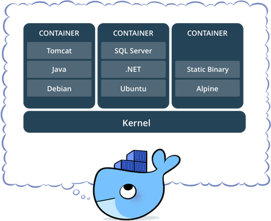

Problem
Dockerを調べていると、どうしても理解しにくいのが、カーネルの共有の概念。 世間様のBlogを見ていると、Dockerの概要図で、各層のスタックをインフラ-マシン-ホストOS-Dockerエンジン-Bin/Lib-Appみたいな表記しているところがいっぱいある。 で、Docker Hubで配布しているイメージを見ていると、Appだけが配布してあって混乱する。
- Bin/LibはDokcerエンジンが提供している?
- カーネルの共有ってことは、AppはホストOSのカーネル部分にアクセスする (Bin/Libを経由して)?
- サンドボックスに近い?
みたいな勘違いをしていた。 さらに混乱したのが、Docker軽量OSであるCoreOS、Alpine Linux等の存在。 「結局OSがいるじゃん、上のBin/Libsとか何?」ってなった。
Solution
結論から言えば、やっぱりOSはいるんですよ。 [slideshare id=54615053&doc=introductiontodockermanagementandoperations2nd-151101144211-lva1-app6892] リンク元:https://www.slideshare.net/zembutsu/introduction-to-docker-management-and-operations-2nd 著者:Masahito Zembutsu様
上のスライドの67Pにおける、ベースイメージ (公式) Ubuntu、CentOS等って言葉。 OSはいるんです。67P付近がすごくわかりやすい。まじで。 公式ページの説明にも、こんな図がある。

https://www.docker.com/sites/default/files/what\_is\_a\_container.png より
{kind=link}
いろんなBlog見ていると、Dockerエンジンの上にいきなりAppがいたりする。 これ見たら、「他のコンテナからは独立、カーネルは共有、ホストOSから見たら単一のプロセスに見える」って、サンドボックスと勘違いしますわ。少なくとも。 多分、従来の仮想OSと差別化して見せたいから、意図的にOSがあることをぼかして、Bin/Libsとか、極端にDockerエンジン-App、っていう図を提示してたんですよ。 広告としてはわかりやすいし、魅力的だもんね。 素直に、ベースイメージ≓Bin/Libsって書いてくれれば迷わなかったね。
Appendix
Dockerfileってあるよね。 ちゃんと仕組みを理解すれば、上の疑問なんてありえないけど、Dockerfileの仕組みを早く知りたかった。 なんで、「ベースイメージがある」、ってことが確信に変わったかっていうと、このDockerfileを眺めていたから。 JenkinsっていうCIのアプリがあるけど、あれのDockerイメージって、冒頭は下記のような記述になっている。 [code lang=”docker”] FROM openjdk:8-jdk
RUN apt-get update && apt-get install -y git curl && rm -rf /var/lib/apt/lists/*
ENV JENKINS_HOME /var/jenkins_home ENV JENKINS_SLAVE_AGENT_PORT 50000 [/code] FROMって見て思いました。これ、他のDockerfileを参照するな、って。 だから、Docker Hubでopenjdkを調べました。 そしたら、openjdkの8-jdkってなっているDockerfileの冒頭は下記。 [code lang=”docker”] FROM buildpack-deps:jessie-scm [/code] 次は、buildpack-depsのjessie-scmの冒頭。 [code lang=”docker”] FROM buildpack-deps:jessie-curl [/code] 次は、buildpack-depsのjessie-curlの冒頭。 [code lang=”docker”] FROM debian:jessie [/code] 次は、debianのjessieの冒頭。debianは有名なLinuxディストリビューションですね。 [code lang=”docker”] FROM scratch [/code] scratchのページにたどり着きました。 下記のようにあります。
an explicitly empty image, especially for building images “FROM scratch”
要するに起点ですね。 これまで辿ってきて、先述のSlideshareを身をもって理解できたわけですよ。 OSはいるんだ、って。